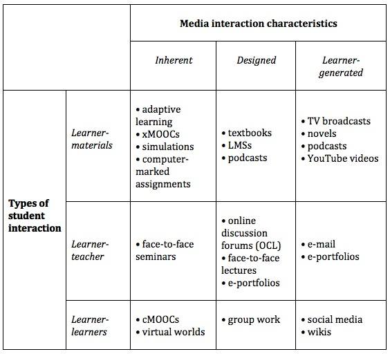

9.6 Interação


O quinto parâmetro do modelo SECTIONS para a seleção de mídias é a interação. De que forma as diferentes mídias viabilizam a interação? A medida em que uma mídia propicia a interação — e a natureza dessa interação — assume importância crucial, na medida em que a investigação científica demonstra de forma inequívoca que os estudantes aprendem melhor quando assumem um papel "ativo" no seu processo de estudo. Mas o que significa isto na prática? E que papel desempenham as tecnologias no suporte à aprendizagem ativa?
9.6.1 Tipos de interação do aprendiz
Identificam-se três vias distintas através das quais os aprendizes interagem no estudo (Moore, 1989), exigindo cada uma delas uma combinação específica de mídias e tecnologias:
9.6.1.1 Interação com os materiais de aprendizagem
Trata-se da interação gerada quando os estudantes trabalham com uma mídia específica, como um livro didático impresso, um sistema de gestão de aprendizagem (LMS) ou um vídeo curto, sem a intervenção direta do professor ou de outros alunos. Esta interação pode assumir um caráter "reflexivo", sem ações externas visíveis, ou manifestar-se de forma "observável", sob a forma de uma resposta avaliada, como um teste de escolha múltipla, ou de notas pessoais para apoiar a memorização e compreensão.
A tecnologia informática pode facilitar a interação dos aprendizes com os recursos de estudo. Testes on-line autoaplicáveis fornecem feedback aos estudantes sobre a sua compreensão da matéria. Estes questionários fornecem também dados aos professores sobre os temas em que os alunos sentem dificuldades, servindo igualmente para a atribuição de classificações. Utilizando ferramentas de avaliação integradas nos LMS, os estudantes podem ser avaliados de forma automática quanto à compreensão dos conteúdos da disciplina. Atividades complexas podem incluir a composição de música com programas que convertem notação musical em áudio, introdução de dados para testar hipóteses em simulações on-line, ou participação em jogos e cenários de tomada de decisão geridos pelo computador. Assim, a interação gerada pelo computador revela-se adequada para desenvolver a compreensão de conceitos e procedimentos, registando contudo limitações no desenvolvimento de competências de nível superior (análise, síntese e pensamento crítico) na ausência de intervenção humana complementar.
Existem outras vias, além da aprendizagem gerida pelo computador, para promover a interação com os materiais de estudo. Os livros didáticos podem incluir atividades propostas pelo autor (como nesta obra), ou os professores podem propor tarefas em torno de leituras recomendadas. Outras atividades podem envolver a leitura de textos ou visualização de vídeos alojados num LMS, pesquisa estruturada de conteúdos na web ou o descarregamento e edição de informações on-line para a criação de e-portfólios de trabalho. Estas tarefas podem ou não ser avaliadas, embora a evidência demonstre que os estudantes, sobretudo os que estudam on-line, priorizam as atividades que contribuem para a classificação.
Por outras palavras, com um planejamento adequado e recursos suficientes, o ensino baseado na tecnologia pode assegurar níveis elevados de interação dos estudantes com os materiais de estudo. Registam-se vantagens econômicas na exploração destas possibilidades, dado que a interação intensa com os recursos eleva o tempo dedicado ao estudo ("time-on-task"), promovendo melhores resultados de aprendizagem (ver Means et al., 2010). Sobretudo, estas atividades, quando bem delineadas, podem mitigar a necessidade de o professor despender tempo na interação individualizada com cada aluno.
9.6.1.2 Interação entre estudantes e professor


A interação estudante-professor revela-se, contudo, necessária para desenvolver resultados de aprendizagem de nível superior, tais como a análise, a síntese e o pensamento crítico. Este aspecto assume relevância no desenvolvimento da aprendizagem acadêmica, na qual os estudantes são desafiados a questionar ideias e a adquirir compreensão aprofundada. Este percurso exige diálogo e debate, quer individualmente entre professor e estudante, quer entre o professor e um grupo de alunos. A função do docente em seminários presenciais ou na aprendizagem colaborativa on-line assume, por isso, caráter crítico.
Algumas tecnologias, como os fóruns de discussão on-line, facilitam e estimulam este diálogo entre estudantes e professores a distância. A principal limitação da interação estudante-professor prende-se com a exigência de tempo do docente, o que limita a sua escalabilidade.
9.6.1.3 Interação entre estudantes


A interação entre estudantes com padrões de qualidade pode desenvolver-se quer em contextos presenciais, quer em ambientes on-line. Fóruns de discussão assíncronos integrados em LMS viabilizam este tipo de interação. Os MOOCs conectivistas e as comunidades de prática também estimulam o contato entre pares.
Contudo, a qualidade pedagógica dependerá do design das atividades. O simples agrupamento de estudantes, seja on-line ou presencialmente, não garante níveis elevados de participação ou aprendizagem de qualidade se não houver reflexão prévia sobre os objetivos pedagógicos do debate na disciplina, a definição de temas adequados e a sua articulação com a avaliação e os resultados pretendidos, e sem a devida preparação dos alunos pelo professor para o desenvolvimento de discussões autogeridas (ver Capítulo 4, Seção 4 para mais detalhes).
Num ambiente de aprendizagem rico em tecnologias, uma decisão essencial para o professor consiste na escolha da combinação ideal destas três modalidades de interação, ponderando a abordagem epistemológica adotada, a disponibilidade de tempo de estudantes e docentes e os resultados de aprendizagem pretendidos. A tecnologia consegue suportar todas estas vertentes de interação.
9.6.2 As características interativas de mídias e tecnologias
Diferentes tecnologias podem potenciar ou limitar os três perfis de interação descritos. Isto exige a análise da dimensão de interatividade aplicada a cada mídia e tecnologia. Esta dimensão integra três componentes ou pontos de classificação, consoante o nível de resposta ativa exigido do utilizador quando a tecnologia é aplicada no ensino.
9.6.2.1 Interatividade intrínseca (Inherent)
Algumas mídias são intrinsecamente "ativas", forçando o estudante a responder para prosseguir. Um exemplo prende-se com a aprendizagem adaptativa, na qual os alunos não conseguem avançar para a etapa letiva seguinte sem interagir através de um teste que valida a consolidação dos conhecimentos ou indica as necessidades de correção. A aprendizagem baseada em computadores de pendor behaviorista é intrinsecamente interativa. As tecnologias que controlam a resposta do utilizador associam-se frequentemente a abordagens de cariz behaviorista.
9.6.2.2 Interatividade desenhada (Designed)
Embora algumas mídias não sejam intrinsecamente interativas, podem ser planejadas para estimular a interação com os utilizadores. Por exemplo, uma página web convencional não é interativa por natureza, mas pode ser concebida como tal através da introdução de caixas de comentários, campos de inserção de dados ou opções de escolha. Os professores podem desenhar e sugerir atividades no âmbito de uma determinada mídia. Um podcast pode ser planejado para que os estudantes interrompam a audição a intervalos regulares para realizar uma tarefa associada aos conteúdos. Esta abordagem aplica-se tanto a páginas web como a livros didáticos.
Frequentemente, a mídia exigirá a intervenção do professor quer para propor as atividades, quer para fornecer o feedback adequado aos estudantes, representando um acréscimo de trabalho para o docente. Deste modo, a interatividade desenhada que requer feedback letivo direto tende a apresentar exigências de tempo superiores às das restantes modalidades.
9.6.2.3 Interatividade gerada pelo utilizador
Algumas mídias podem não integrar elementos explícitos de interação, mas os utilizadores finais interagem voluntariamente com as mesmas, quer ao nível cognitivo, quer através de respostas físicas. A título de exemplo, um visitante numa galeria de arte pode reagir cognitiva ou emocionalmente a uma determinada pintura, enquanto outros passam pelo quadro sem lhe dispensar atenção. Os estudantes podem optar por realizar esboços a partir da obra de arte. Dinâmicas semelhantes ocorrem na leitura de um romance ou poema.
Os autores podem desenhar a obra deliberadamente para incentivar a reflexão ou a análise, mas de forma implícita, confiando a interpretação do conteúdo ao observador ou leitor (o que caracteriza uma abordagem de aprendizagem construtivista). Mídias que promovem a atividade autônoma dos aprendizes sem a necessidade de intervenção direta do professor apresentam vantagens em termos de custos, embora a qualidade da interação seja de monitorização e avaliação mais complexas.
9.6.2.4 Quem detém o controle?
Deste modo, uma das dimensões da interatividade prende-se com o controle: em que medida a interação é gerida ou propiciada pela tecnologia, pelos criadores/professores ou pelos utilizadores/estudantes? Trata-se de uma dimensão complexa, influenciada por posições epistemológicas e por opções de design do professor. Estas categorias de interatividade não são estáticas, existindo diferentes níveis de interação no âmbito da mesma mídia. Em última análise, a interação deve articular-se com os resultados de aprendizagem pretendidos. Que tipo de interação apoiará melhor determinado resultado e qual tecnologia propicia essa interação?
9.6.3 Interação e feedback
O feedback constitui uma dimensão crucial da interação, revelando-se o feedback tempestivo e adequado essencial para a eficácia do estudo. Especificamente, em que medida a mídia selecionada viabiliza a prestação de feedback? Embora um estudante possa refletir sobre um poema num livro, o feedback a essa reflexão não é disponibilizado pela mera leitura. Exigir-se-á a utilização de outra mídia para o efeito, como um debate presencial ou um fórum on-line.
Por outro lado, no ensino baseado no computador, após a resposta do estudante a uma pergunta de escolha múltipla, o sistema pode corrigi-la e disponibilizar feedback instantâneo. Em contrapartida, mídias como a impressa não dispõem de capacidade para fornecer feedback imediato ou adequado às tarefas dos estudantes. Embora se possam disponibilizar chaves de resposta no final do manual, a prestação de feedback de qualidade nestas mídias exige a intervenção do professor.
Deste modo, as tecnologias e mídias divergem na sua capacidade de fornecer feedback. Sob a perspectiva pedagógica, cumpre definir qual tipo de feedback se revela mais eficaz e a melhor via para o disponibilizar. Especificamente, importa identificar em que circunstâncias é adequado automatizar o feedback e quando este deve ser prestado pelo professor, por assistentes ou através da interação entre pares.
9.6.4 Analisar as qualidades interativas de diferentes mídias
Na Figura 9.6.4, analiso o potencial de interação de diferentes mídias sob duas dimensões: as modalidades de interação do estudante e as características da mídia (se a interatividade é intrínseca, se depende de design intencional ou se cabe ao aluno decidir de que forma interagir).



Distribuí diversas mídias de acordo com as atividades letivas que apoiam. O posicionamento de algumas destas tecnologias dependerá, contudo, das opções de design do professor. Por exemplo, um podcast pode integrar uma tarefa associada (desenhada) ou constituir uma mera transmissão de conteúdos, cabendo ao aluno interpretar o seu sentido e finalidade na disciplina (gerada pelo utilizador). Em determinados cenários, uma tarefa pode ser desencadeada por uma mídia (ex.: podcast) mas a sua execução e feedback ocorrerem noutra (ex.: sistema de avaliação on-line).
9.6.5 Resumo
Deste modo, constata-se a complexidade de categorizar mídias e tecnologias no plano da interação, dado que professores e estudantes dispõem de opções sobre o uso efetivo de cada ferramenta, condicionando a forma como a interação e o feedback se processam. Assim, a qualidade do design das atividades interativas revela-se tão relevante quanto a escolha da mídia, embora a seleção de uma tecnologia inadequada possa reduzir o nível de atividade e a qualidade das interações. Na prática, professores e estudantes recorrerão a combinações de mídias para garantir interações de qualidade. Contudo, a utilização de mídias diversas tende a elevar os custos e o volume de trabalho de docentes e estudantes.
Reitera-se a ausência de juízos de valor sobre quais mídias asseguram a "melhor" interação. A escolha deve depender das atividades consideradas relevantes pelo professor no planejamento letivo global. O objetivo desta análise consiste em sensibilizar para as diferenças entre mídias educativas na geração de interações, apoiando tomadas de decisão fundamentadas. Neste plano, não existem mídias vencedoras por natureza. As decisões de design pedagógico revelam-se mais importantes do que a escolha tecnológica em si. No entanto, a tecnologia viabiliza que estudantes geograficamente dispersos tenham acesso a atividades e feedback de qualidade, promovendo, quando devidamente aplicada, maior tempo de dedicação ao estudo.
9.6.6 Questões para ponderação
- Tendo em conta as competências que pretendo desenvolver, quais modalidades de interação serão mais úteis? Que mídias ou tecnologias posso aplicar para as facilitar?
- Visando gerir de forma eficaz o meu tempo, quais tipos de interação assegurarão um equilíbrio adequado entre a compreensão e o desenvolvimento de competências dos estudantes e o tempo que dedicarei a interagir com eles (presencialmente ou on-line)?
Atividade 9.6 Utilizando mídias para promover a atividade do estudante
- Pesquise a sua área científica ou disciplina no YouTube.
- Selecione um vídeo da lista de resultados que recomendaria aos seus estudantes.
- Que tipo de interação o vídeo exige dos estudantes? Força-os a responder de alguma forma (interatividade intrínseca)?
- De que forma os estudantes tenderão a reagir autonomamente ao vídeo (ex.: tomar notas, realizar uma tarefa, refletir sobre o tema - interatividade gerada pelo utilizador)?
- Qual atividade proporia aos estudantes após a visualização do vídeo (interatividade desenhada)? Que tipo de conhecimentos ou competências essa atividade apoiaria? Qual mídia ou tecnologia utilizariam para realizar a atividade?
- De que forma os estudantes obteriam feedback sobre a atividade proposta? Qual mídia utilizariam para dar e receber feedback?
- Qual o volume de trabalho que essa atividade lhe exigiria? Revelar-se-ia gerenciável e vantajoso? A atividade seria escalável para turmas de grande dimensão?
- De que forma o vídeo do YouTube poderia ter sido concebido para gerar maior ou melhor nível de atividade por parte dos espectadores ou estudantes?
Não é fornecido feedback para esta atividade, que exige uma resposta gerada pelo próprio leitor.
Referência
Means, B. et al. (2009) Evaluation of Evidence-Based Practices in Online Learning: A Meta-Analysis and Review of Online Learning Studies Washington, DC: US Department of Education
Moore, M.G. (1989) Three types of interaction American Journal of Distance Education, Vol.3, No.2